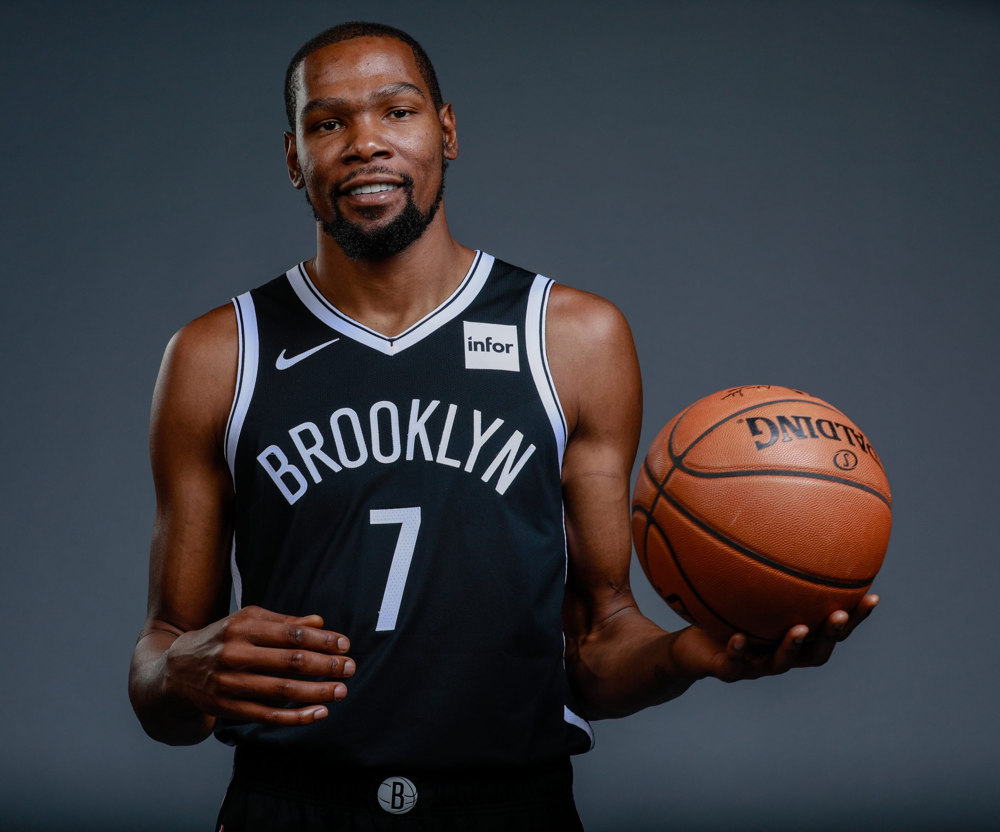

Kevin Durant
Kevin Wayne Durant (born September 29, 1988) is an American professional basketball player for the Brooklyn Nets of the National Basketball Association (NBA). He played one season of college basketball for the University of Texas, and was selected as the second overall pick by the Seattle SuperSonics in the 2007 NBA draft. He played nine seasons with the franchise, which became the Oklahoma City Thunder in 2008, before signing with the Golden State Warriors in 2016, winning back-to-back championships in 2017 and 2018.
Durant was a heavily recruited high school prospect who was widely regarded as the second-best player in his class. In college, he won numerous year-end awards and became the first freshman to be named Naismith College Player of the Year. As a professional, he has won two NBA championships, an NBA Most Valuable Player Award, two Finals MVP Awards, two NBA All-Star Game Most Valuable Player Awards, four NBA scoring titles, the NBA Rookie of the Year Award, and two Olympic gold medals. Durant has also been selected to nine All-NBA teams and ten NBA All-Star teams.